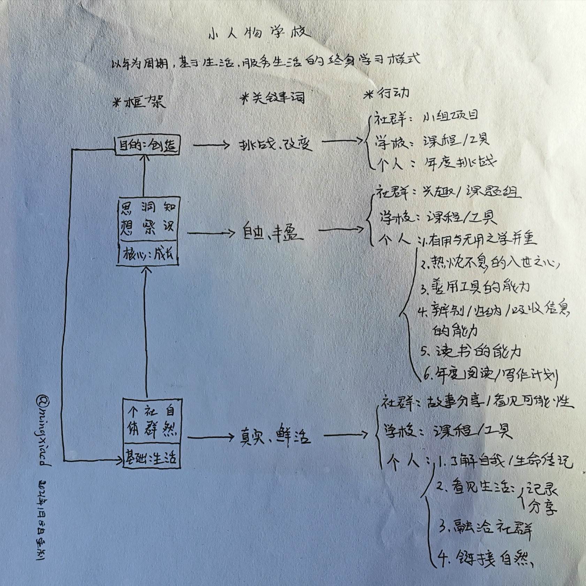

终身学习之道：我的路径与“小人物学校”
学习从来都不是只发生在特定人群和特定场所的事情，当我们呱呱坠地的时候，伴随着第一声啼哭，学习便开始了。
在妈妈温暖的怀抱里，在夹杂芳香的泥土上，在潺潺流动的溪水旁，在鸟鸣虫飞的丛林间……在我们双脚到达和所在的每一个地方，学习无处不在。
然后，我们一天天的长大，幼年、少年、青年、中年，直到垂垂老去。如果在某个时刻，我们疏远了学习，不再珍之惜之，那么垂垂老去就会在那一刻发生。
所以，对于一个始终将生命置于成长状态中的人而言，终身学习是如此的重要，如同吃饭和睡觉一样。在我而言，其之所以重要，应该有以下三个原因：
- 我们需要人生的保鲜剂。
- 我们需要理解变革时代的能力。
- 我们需要时刻准备迎接人生的新一种可能。
但与学校教育不同的是，终身教育是不存在督导和监管的个体行为，每个人都可以选择是否学习，以及学习的内容、方式和路径。很显然，这是一个非常宏大的主题，在我的经验里，有一部分朋友根本没有想过这个问题，有些努力成长的朋友却不知道该如何入手？有些却不过是被生活逼迫和推动下被动的去学习。于我亦然，仍在探索的路上。
所以乐于在此将自己的些许思考分享出来，2018年的时候，我曾就这个问题，总结过往经验，整理出一个自以为系统的终身学习框架，两年后再做完善，对外分享，以作抛砖引玉。

以年为周期，生活为基础、学习为核心、创造为目的，而创造应用于生活，如此反复。
通常看来，终身学习更侧重于能力的提升和知识的更新，但在我看来这只是表象，因为很多现实的困扰往往不是知识的匮乏，而是生活的杂乱、关系的纠缠，我坚信脚踏实地的、真实鲜活的生活是一切力量和可能的源泉，是学习得以展开的基础，若不建基于生活，为何而学以及持久学习的动力（是终身学习哦）何在便会成为必将面临的两大问题。
这也就是我将生活列为基础的原因，自从2014年开启山居生活，与土地的链接紧密，便愈加的感受到生活和大自然的馈赠，除了可以看见的柴火、蔬菜，更无法估价的是在我工作中面临难题的时候，总会有不可知的力量带给我灵感，那是“顿悟”的感觉。
关于我自己的这套学习模式，如上图中已经清晰列出，就不再用更多文字赘述，基本上过去这么多年，我是沿着图上三个层次中的“个人”所列的活动来展开学习之旅的，靠着生活的馈赠，怀着谦卑之心去学习，相信自己的无所不能却也勇于承认自己的无能，把内心看好、想好的事列为年度挑战，去完成。年末的时候，看着眼前的成果，自然是心生欣喜——每个人都需要成就感的激励。
需要特别说明，整个框架逻辑上是从下至上，但是在实操中却以从上而下为优——以个人而言，每个年末，来确定下一个年度挑战，然后年内有目的的学习便有了方向，有了方向便清晰了所需何种资源，进而为相应资源而学习和交流，与此同时一个人的年度阅读和写作计划以及底层与生活的连接应该是始终存在的，当然也可以在年末的时候为其设定新的内容。
当然，即便是只遵循“个人”这个路径，我也有许多未尽之处，恰逢新年伊始，我愿意放掉一些随意之心，更认真的去“循规蹈矩”。
记得当初整理这个框架，是为了基于社群，构建一个线上的“小人物学校”，怎奈心力不足，未能实现，有些愧对积极支持的一些朋友。所以把自己的想法梳理并且分享出来，也是乐事，希望抛砖引玉，给始终藏有成长之心的朋友一些启发，尤其是在急剧变化的今天，在数字技术无所不在的今天，我们如何规划好自己的学习之路。
最后更新：2021年1月9日、返回个人介绍页